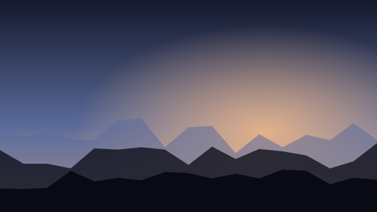
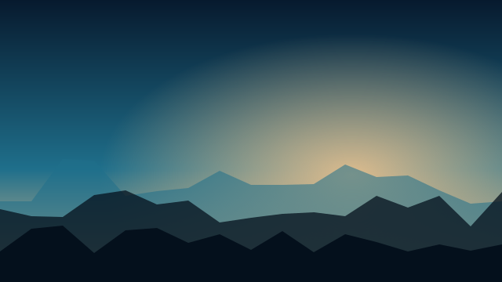
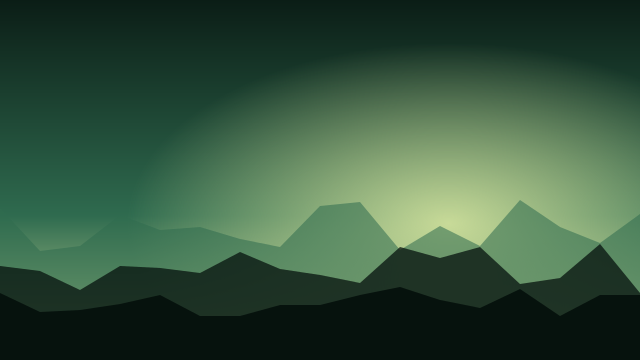
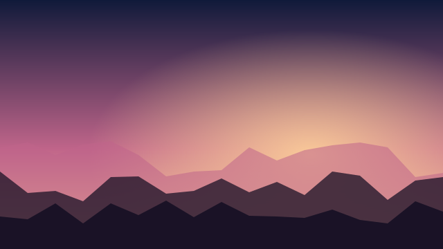
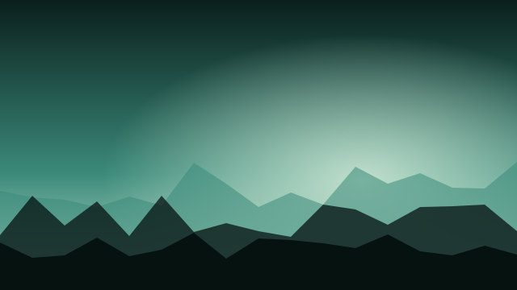
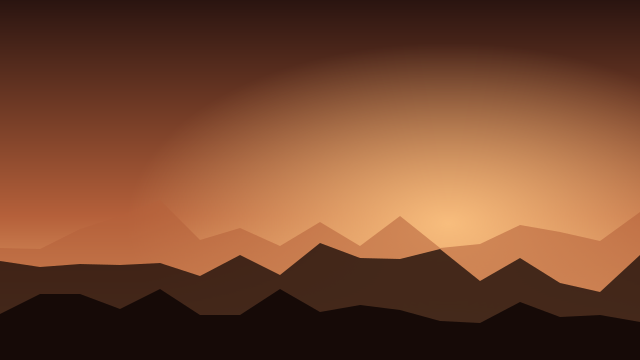

Moodboard: 6 hero frames (1440 × 900, drawn at 1/3)
Wild Frames
Clips · Process · FAQ
Nature, rendered.
Photoreal 4K stock footage, built in Unreal Engine 5.
Browse clips

A — chosen.
Product-cinematic. Black, centred line, full-bleed footage below (65% of the first screen).
Wild Frames
Clips · Process · FAQ

Nature, rendered.
Browse clips
B.
Footage first, line under it. Strong, but the promise lands after the picture.
Wild Frames
Clips · Process · FAQ
Nature, rendered.
Browse clips

C.
Light hero, framed footage. Footage loses depth on grey; under 60%.

Nature, rendered.
Plate 01 — Sky, dusk.
D.
Editorial-gallery. Paper, asymmetric. Calm, but stock buyers scan for footage, not plates.
Nature, rendered.


E.
Editorial wall. Many small images, no single hero shot.
Nature, rendered.
Photoreal 4K stock footage.
Browse clips
F.
Split. Text left, footage bleeds right. Footage under 60%.